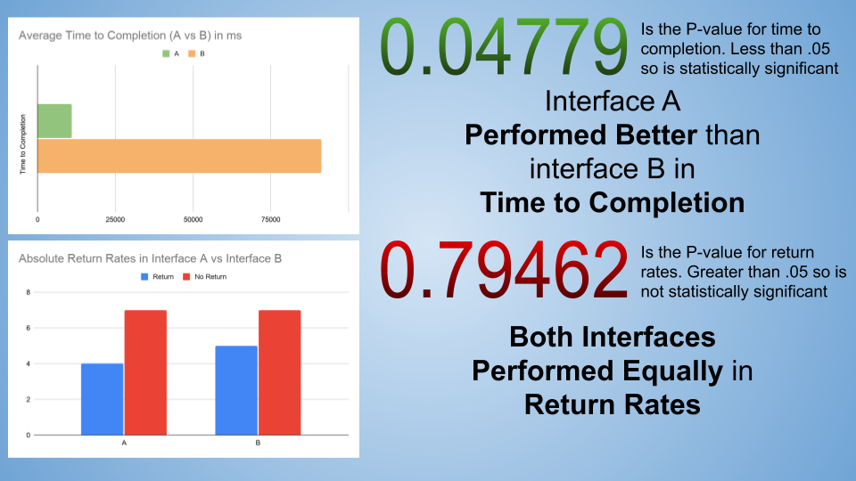

Interface A

Interface B

Null and Alternative Hypotheses
To measure whether or not there is a difference between the two interfaces on Time to Completion and Return Rate, we must first define what we are measuring as well as formulate null and alternative hypotheses. Null Hypotheses, or the hypothesis that there is no difference between the interface, must be negated through the data in order to show a difference. The Alternative Hypotheses would then be shown to be true.
Time to Completion and Return Rate Defined
Time to Completion: From when a user starts interacting with the page to the point they make their last item. A user's data is only taken into account if they complete the task (order at least $150 of cacti)
Return Rate: If a user returns from the cart back to the main page any number of times, they are tallied as a user who returned or "Return". If they did not return, they they are tallied a user who did not return or "No Return"
Null Hypotheses
- There is no difference between interface A and interface B in user Time to Completion
- There is no difference between interface A and interface B in user Return Rate
Alternative Hypotheses
- There exists a statistically significant difference between interface A and B in user Time to Completion
- There exists a statistically significant difference between interface A and B in user Return Rate
Reasoning for Alternative Hypotheses
Interface A has less color contrast than interface B. The cart in interface A is positioned in the certer whereas it is tucked to the side in interface B. The items in interface A are also more spread out than in interface B. Any of these can create a difference in how the user interacts with each.
Performance and Data Analysis
Conclusions and Takeaways
A Performed Better on Time to Completion
There was a statistically significant difference which showed A to perform better than B on Time to Completion. The null hypothesis was rejected.
There was no significant difference in Return Rate
There was no statistically significant difference between A or B in return rates and the null hypothesis was not rejected.
A Overall is a Better Interface
Broad Takeaways
- The sample size was relatively small and there were a few outliers where people spent a large amount of time on both interfaces which may have skewed the data.
- The test seemed to show that spacing out items and having fewer perceived items (interface B had more deliniation between the different interface items) seemed to yield better results
- There were a number of people who refreshed the page multiple times and interacted with both interfaces, but didn't complete the tasks. There may have been some behavior that wasn't adequately captured by the tests
- A/B Testing seemed to be a pretty effective way of making objective assessments about interfaces even on limited data and are worth doing